History of Nepalese Millipede Description
The history of millipede taxonomy in Nepal is rich and extensive, beginning with Carl's 1935 description of Orthomorpha (Orthomorpha) simulans and Hingstonia eremita, the latter of which established the genus Hingstonia. In 1936, Attems introduced the new genus Kophosphaera based on Kophosphaera excavata (Butler, 1874) and referenced Carl's previously mentioned species. After a long gap, Demange (1961) described two species of Gonoplectus from Nepal, namely G. hyatti and G. brolemanni, collected by K. H. Hyatt in 1954.
The 1970s and 1980s represented a period of accelerated discovery, heavily fueled by specimens from Himalayan expeditions by Prof. Dr. Jochen Martens and his colleagues. Shear (1979) erected the new subfamily Nepalellinae with the genus Nepalella, describing two species within this genus, and also described three species of Tianella. Mauriès (1983a) documented the family Cambalopsidae in Nepal with Trachyjulus wilsonae and Podoglyphiulus elegans nepalensis. Mauriès (1983b) introduced the julid subgenus Nepalmatoiulus with description of three new species and reported Gonoplectus malayus from Nepal. Golovatch (1986) started extensive research, describing the new genus Himalodesmus with two new species and described species under genera Usbekodesmus (4), Hingstonia (2) and Sholaphilus (4), which reported family Polydesmidae first time in Nepal. Again in Golovatch (1987a) he documented the family Opisotretidae, introducing Martensodesmus with description of three new species, also described more six species of Himalodesmus and two new species of genus Hingstonia. Successively Golovatch (1987b) reported Glomeridae for Nepal with description of five species of Hyleoglomeris and also described Nepalotretus genus with the description of N. martensi. Shear (1987) described more species under genus Tianella (4), Nepalella (2) and Kashmireuma (1). Enghoff (1987) elevated Nepalmatoiulus to genus rank with description of ten new species. Mauriès (1988) expanded the known diversity of Chordeumatida, describing new species of Tianella (4), Nepalella (1), and Kashmireuma (6).
The 1990s were characterized by further in-depth study of the order Polydesmida, particularly the family Paradoxosomatidae. Golovatch (1990a) first reported the cosmopolitan species Orthomorpha coarctata and Oxidus gracilis, as well as Paranedyopus cylindricus from Nepal with description of several new taxa under genus Paranedyopus (4) and Orophosoma (1). Golovatch (1990b) involved the description of numerous species of Polydesmidae under genera Himalodesmus (1), Usbekodesmus (1), Hingstonia (4) and Sholaphilus (2). His subsequent works (1992, 1993, 1994a, 1994b, 1996) also reported many species and described many new species of Paradoxosomatidae under known genera as well as new genera Martensosoma, Nepalomorpha, Parorthomorpha, and Hirtodrepanum. This period also saw Shelley's (1996) description of the monotypic genus Nepalozonium, representing the first record of its order from Central Asia. Korsós (1996) mentioned three species of Anaulaciulus, which were later described in Korsós (2001). Golovatch (2000) synonymized Paranedyopus Carl, 1932 to Anoplodesmus Pocock, 1895 which synonymized Nepalese species also.
The new millennium brought further discoveries and significant taxonomic revisions. Korsós et al. (2009) described the rare Hirudicryptus quintumelementum, the only species of order Siphonocryptida. Golovatch (2011) synonymized Usbekodesmus with Epanerchodus, and later (2014) synonymized several paradoxosomatid genera (Nepalomorpha, Parorthomorpha, Martensosoma, Armolites, Orophosoma) under the resurrected genus Delarthrum with description of some new species, also established Beronodesmus new genus. Golovatch & VandenSpiegel (2014) described a species of Koponenius. Golovatch (2015) reported Streptogonopus phipsoni, described species under genera Anoplodesmus (1), Kronopolites (1), Beronodesmus (7), Delarthrum (4) and described new genus Beronodesmoides with description of three new species. Golovatch (2016a, 2016b, 2016c) and Golovatch et al. (2016) described many species under genus Substrongylosoma, Pocockina, Beronodesmoides, Anoplodesmus, Delarthrum, Touranella and Beronodesmus. Golovatch & VandenSpiegel (2016) described another species under Koponenius. After that Golovatch (2022) described Epanerchodus telnovi and in 2023, he described two species, Chondromorpha greke and Delarthrum telnovi, from Nepal. Recently Mikhaljova (2025) described two new species of Nepalmatoiulus from Nepal.
History of Nepalese Millipede Descriptions
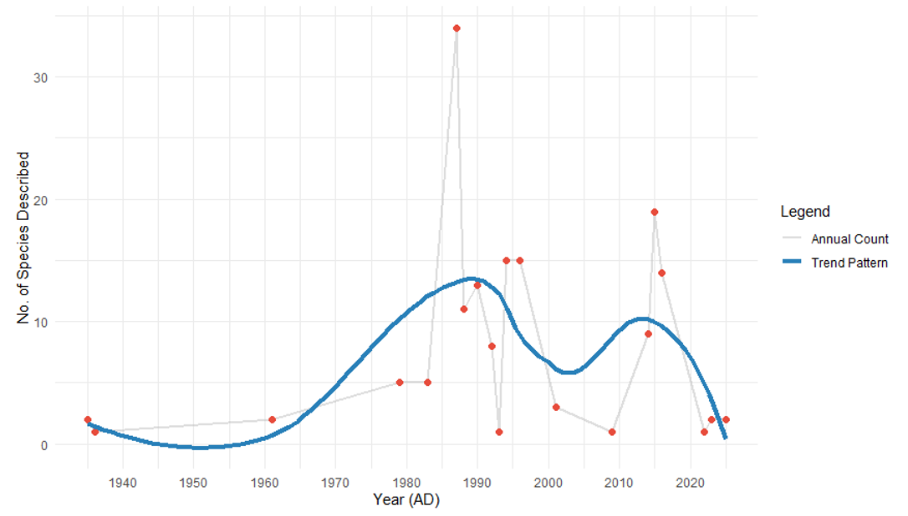
Why is the trend of species descriptions declining?
The recent decline in the number of newly described millipede species from Nepal does not necessarily reflect reduced biodiversity. Instead, it is largely influenced by stricter national regulations and customs policies that restrict the export of biological specimens for taxonomic study. As a result, fewer specimens reach international specialists, slowing the pace of formal species descriptions.
This situation highlights the urgent need to strengthen taxonomic research capacity within Nepal. Developing local expertise, research infrastructure, and laboratory facilities is essential. We are planning to collaborate with national and international taxonomists, universities, and funding agencies to promote integrative taxonomy and phylogeographic research conducted inside Nepal. Such efforts will help revitalize systematic studies and accelerate the documentation of Nepal's millipede diversity.
Why are we interested in millipedes?
During M.Sc., we aimed to explore a relatively understudied biological group within the context of Nepal. Under the guidance of my professor as well as supervisor, we focused on the class Diplopoda (millipedes). Lokendra Chand conducted a comprehensive taxonomic study of millipedes from urban forest patches in the Kathmandu Valley, emphasizing species identification based on gonopod morphology. After this, we compiled the checklist of millipedes,we found that the whole western and southern parts are unexplored and possibility of founding new species in explored area is also high(experience during thesis). All the species identified and described on the basis of morphology. Integrative taxonomy may also discover new species from explored area as well as unexplored parts.
The discovery of high levels of endemism and previously undocumented diversity significantly deepened our interest in Nepalese millipedes. This experience reinforced the importance of continued taxonomic exploration and conservation of Nepal's unique and largely unexplored millipede fauna.
Taxonomists of Nepalese Millipedes
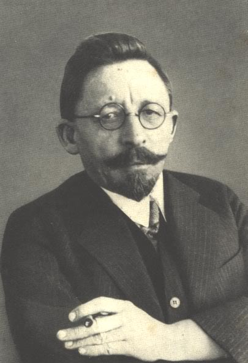
J. Carl
First descriptions (1935)
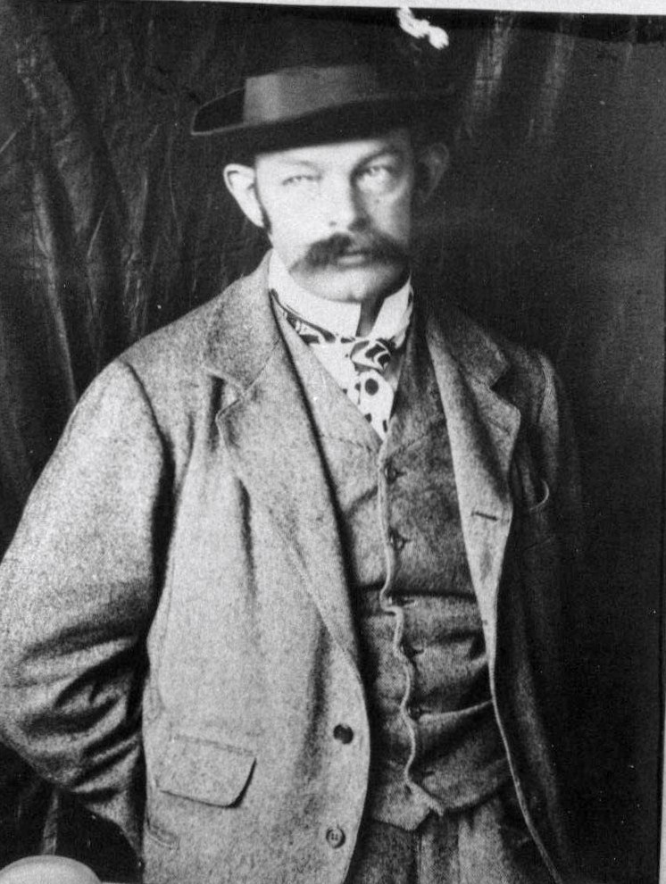
Carl Attems
Genus Kophosphaera (1936)

J.M. Demange
Gonoplectus spp. (1961)
William A. Shear
Nepalellinae, Tianella (1979,1987)
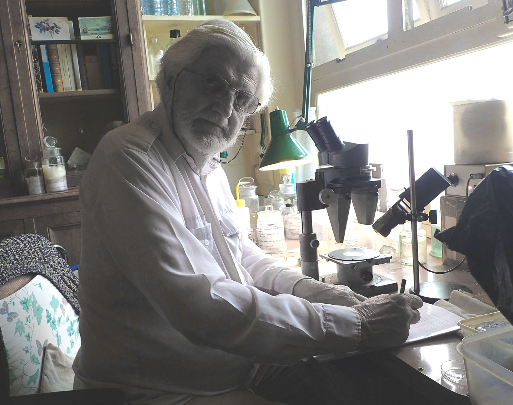
Jean-Paul Mauriès
Cambalopsidae, Julidae (1983,1988)
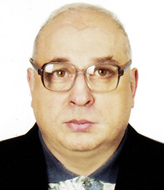
Sergei Ilyich Golovatch
Most prolific describer (1986–2023)
Henrik Enghoff
Nepalmatoiulus revision (1987)
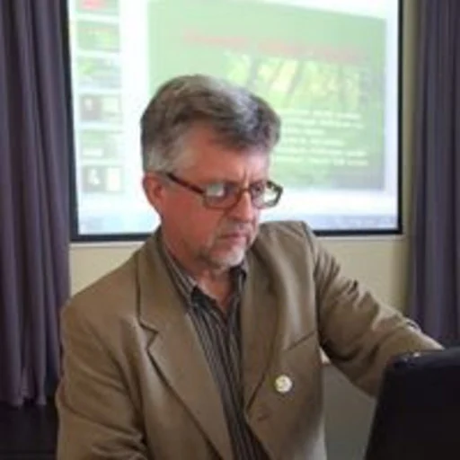
Zoltán Korsós
Anaulaciulus, Siphonocryptida
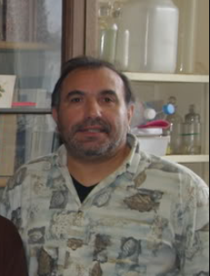
Jean-Jacques Geoffroy
Hirudicryptus (2009)
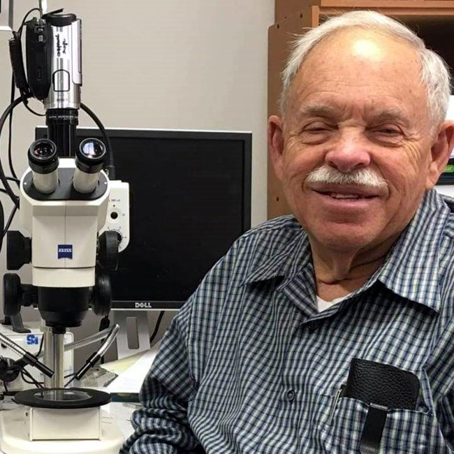
Rowland M. Shelley
Nepalozonium (1996)
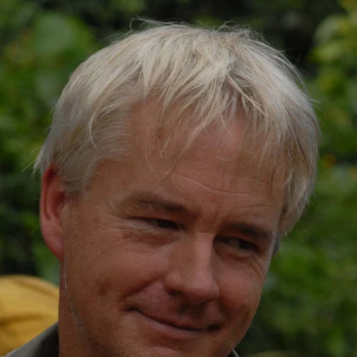
Didier VandenSpiegel
Koponenius (2014,2016)
Thomas Wesener
Giant Pill-Millipedes (2015)
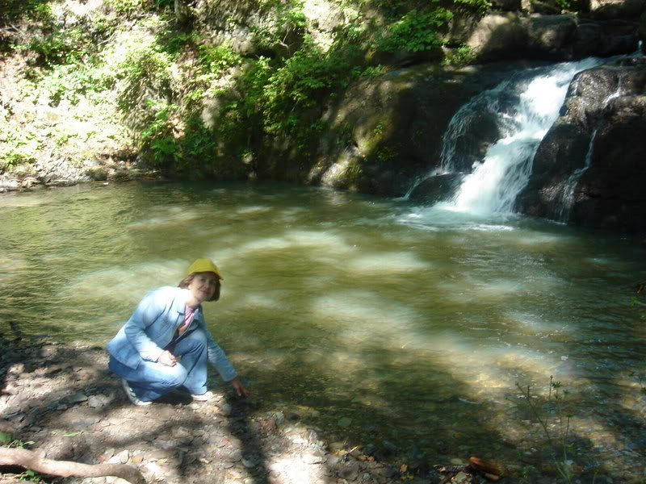
Elena V. Mikhaljova
Nepalmatoiulus (2025)
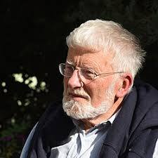
Jochen Martens
He and his colleagues collected most of the millipede specimens along trekking routes in the hilly and mountainous regions of Nepal.
References
- Attems, C. (1936). Diplopoda of India. Memoirs of the Indian Museum, 11(4), 133–323.
- Carl, J. (1935). Polydesmiden gesammelt von Major R.W. Hingstonia auf der III. Everest Expedition 1924. Revue Suisse de Zoologie, 42(10), 325–340.
- Demange, J.-M. (1961). Matériaux pour servir a une révision des Harpagophoridae. Mémoires du Muséum national d'histoire naturelle, 24, 1–274.
- Enghoff, H. (1987). Revision of Nepalmatoiulus Mauries 1983. Courier Forschungsinstitut Senckenberg, 93, 241–331.
- Golovatch, S. I. (1986). Diplopoda from the Nepal Himalayas: Polydesmidae, Fuhrmannodesmidae. Senckenbergiana Biologica, 66(4/6), 345–369.
- Golovatch, S. I. (1987a). Diplopoda from the Nepal Himalayas. Opisotretidae, additional Polydesmidae. Courier Forschungsinstitut Senckenberg, 93, 203–217.
- Golovatch, S. I. (1987b). Diplopoda from the Nepal Himalayas. Glomeridae, additional Opisotretidae. Courier Forschungsinstitut Senckenberg, 93, 219–228.
- Golovatch, S. I. (2014). On several new or poorly-known Oriental Paradoxosomatidae, XVI. Arthropoda Selecta, 23(3), 227–251.
- Golovatch, S. I. (2015). On several new or poorly-known Oriental Paradoxosomatidae, XVII. Arthropoda Selecta, 24(2), 127–168.
- Golovatch, S. I., & VandenSpiegel, D. (2014). Koponenius gen. nov. (Haplodesmidae). Zootaxa, 3894(1), 141–151.
- Mauriès, J. P. (1983a). Une famille nouvelle et deux genres nouveaux de Cleidogonoidea. Steenstrupia, 8(6), 165–187.
- Mauriès, J. P. (1983b). Myriapodes du Nepal I. Diplopodes Iuliformes – Nepalmatoiulus nov. subgen. Revue Suisse de Zoologie, 90(1), 127–138.
- Mikhaljova, E. V. (2025). The millipede genus Nepalmatoiulus in Nepal, with two new species. Zootaxa, 5706(3), 426–438.
- Shear, W. A. (1979). Diplopoda from the Nepal Himalayas. Chordeumida. Senckenbergiana Biologica, 60(1-2), 115–130.
- Shelley, R. M. (1996). Nepalozonium trimaculatum, n. gen., n. sp. (Polyzoniida). Proceedings of the Entomological Society of Washington, 98(4), 677–680.
- Wesener, T. (2015). Giant Pill-Millipedes of Nepal (Zephroniidae). Zootaxa, 3964(3), 301–320.